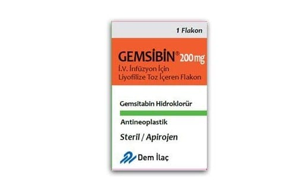

Gemsibin 200 mg IV İnfüzyon İçin Liyofilize Toz İçeren Flakon, 1 Adet

Ne için kullanılır
KT · Bölüm 1GEMSİBİN
ambalajı, toz içeren cam bir flakondan oluşur. Toz halinde bulunan GEMSİBİN
beyaz ila kırık beyaz arası renktedir. 5 ml steril % 0.9’luk Enjeksiyonluk Sodyum Klorür ile hazırlanan çözelti berrak renksiz ila açık saman rengi arasındadır.
Hastane eczacısı, hemşire veya doktor GEMSİBİN’i steril sodyum klorür çözeltisinde çözüp poşet veya pompadan geçirerek tüp ve iğne yardımıyla damarlarınızdan birine verir. Buna intravenöz infüzyon adı verilir.
GEMSİBİN
sitotoksik bir ilaçtır. Sitotoksik ilaçlar kanser hücreleri de dahil olmak üzere bütün bölünen hücreleri öldürür.
GEMSİBİN, mesane kanseri, akciğer kanseri (‘Küçük Hücreli Dışı’ tipi), pankreas kanseri, meme kanseri ve over (yumurtalık) kanseri hastalarının tedavisinde kullanılır.
Eğer doktorunuz size bu ilacı başka bir nedenle verdiyse, ilaçla ilgili her türlü sorunuzu doktorunuza sorunuz.